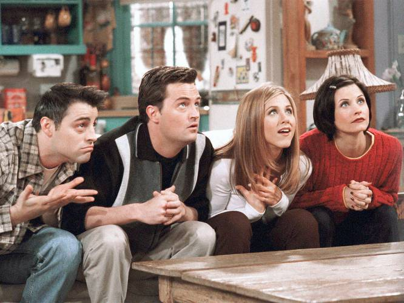
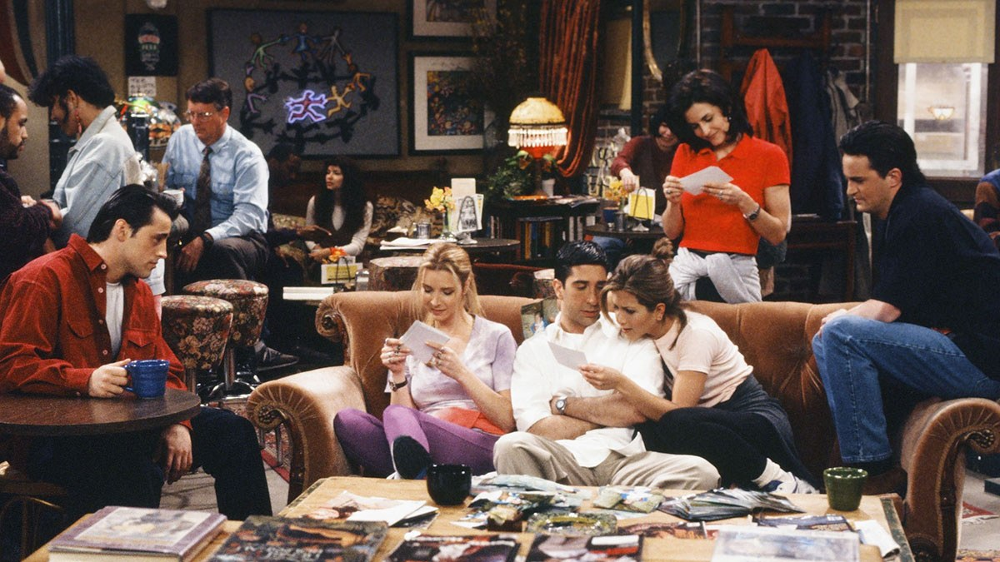
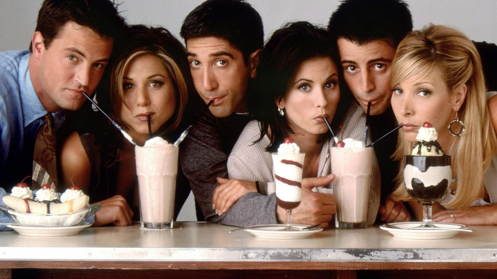

Series Televisivas
Friends
Friends (estilizado «F·R·I·E·N·D·S», conocida en Hispanoamérica como Amigos en la versión doblada y en España como Friends durante el doblaje de la temporada 1) es una serie de televisión estadounidense creada y producida por Marta Kauffman y David Crane. Se emitió por primera vez el 22 de septiembre de 1994 por la cadena NBC y terminó el 6 de mayo de 2004.

La serie trata sobre la vida de un grupo de amigos —Chandler Bing, Phoebe Buffay, Monica Geller, Ross Geller, Rachel Green y Joey Tribbiani— que residen en Manhattan, Nueva York. Suceden tanto buenos como malos momentos, pero con una crítica cómica a los hechos más trascendentales de la actualidad. Inmediatamente después del éxito en su país, el programa comenzó su difusión por todo el mundo con similares resultados, y hoy en día es considerado uno de los mejores en la historia de la televisión.

La serie está compuesta de diez temporadas de unos 24 capítulos cada una —salvo la tercera y sexta temporada, que tuvieron 25 episodios, y la última, que tuvo 18 capítulos—. Una vez finalizada, se rodó Joey, una secuela sobre la vida del personaje homónimo en Los Ángeles. También tuvo un breve cruce con la serie Mad About You, cuando Jamie y Lisa entraron en Central Perk y confundieron a Phoebe Buffay con su hermana gemela Ursula.
